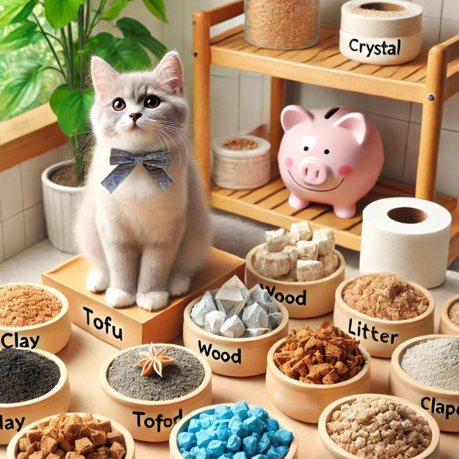

FurryTails|Ultimate Guide to Choosing and Recommending Cat Litter

There are numerous types of cat litter available—clay, tofu, wood, crystal, paper, and peanut shell. How do you choose the right one? For pet owners, selecting suitable cat litter not only impacts the health and comfort of their cats but also affects the convenience of daily cleaning. This article will briefly explain the characteristics of various cat litters, key points to consider when purchasing, and recommend 7 popular cat litters to keep your cats happy and your worries at bay!
Types of Cat Litter
- Clay (Clumping): Made from bentonite clay, excellent absorption and odor control, but may produce dust harmful to cats’ respiratory systems.
- Tofu: Eco-friendly, made from soybean residue, excellent absorption and odor control, biodegradable.
- Wood: Made from wood shavings, good absorption and odor control, but may produce wood dust.
- Crystal: Powerful odor absorption, requires a special litter box, not flushable.
- Paper: Eco-friendly, biodegradable, but lesser absorption and moderate odor control.
- Peanut Shell: Made from natural peanut shells, moderate absorption and odor control, biodegradable.
Buying Guide
- Types of Cat Litter: Consider different types such as clay and tofu. Clay offers good absorption but may generate dust; tofu is natural and harmless but more expensive.
- Automatic Litter Box: Ideal for multiple cats or when away from home for extended periods, these boxes automatically clean, maintaining hygiene and reducing cleaning efforts.
- Environmental Considerations: Opt for flushable litter to reduce waste, though be cautious as some types can clog toilets.
- Odor Control: Some litters come with added deodorizers, effectively managing odors while ensuring they are safe for cats and humans. Both clay and tofu litters generally excel in odor control, with tofu slightly lagging behind.
- Absorption Performance: Excellent absorption is crucial for keeping litter boxes dry and comfortable for cats.
- Cost Consideration: Prices vary based on brand, type, and performance. Choose based on budget and your cat’s needs.
- Cat Preference: Cats may prefer specific types or brands, so it may take some trial and error to find the best fit.
Cat Litter Tips
- Cleaning Frequency: Regularly clean litter boxes—remove solid waste daily and change litter weekly.
- Placement: Put litter boxes in quiet areas, away from food and water, ensuring privacy for cats.
- Size Matters: Choose litter boxes suitable for your cat’s size, with high edges to prevent scattering.
- Amount of Litter: Add enough litter to cover the bottom but avoid overfilling for comfort.
- Handling Issues: If cats start avoiding litter boxes or show unusual urination patterns, consult a vet promptly.
- Storage: Store litter in a dry, ventilated area to maintain effectiveness and prevent odors.
Product Recommendations
Here are selected products from Amazon to assist in your decision-making. Links may contain affiliate marketing programs, where clicking and purchasing may generate a small commission for us (at no additional cost to you), helping maintain our website operations.
Dr. Elsey’s Premium Clumping Cat Litter Purchase Link
Reasons for Recommendation:
- Type: Clay (Clumping)
- High Quality: Made from 100% bentonite clay, excellent clumping performance.
- Low Dust: 99.9% dust-free, suitable for dust-sensitive cats and owners.
- Effective Odor Control: Keeps home fresh, ideal for multi-cat households.
Fresh Step Clumping Cat Litter Purchase Link
Reasons for Recommendation:
- Type: Clay (Clumping)
- Collaboration Formula: Partnered with Febreze for strong odor control.
- Long-lasting Odor Control: 10-day odor control guarantee, perfect for busy owners.
- Low Dust Formula: 99.9% dust-free, keeps air fresh and reduces tracking.
PetSafe ScoopFree Premium Blue Non-Clumping Crystal Cat Litter Purchase Link
Reasons for Recommendation:
- Type: Crystal
- Crystal Cat Litter: Rapidly absorbs urine, effectively controls odors.
- Long-lasting Use: Lasts up to 30 days for single-cat households, reduces cleaning frequency.
- Low Tracking: 99% dust-free, keeps floors clean.
Arm & Hammer Clump & Seal Platinum Multi-Cat Complete Odor Sealing Clumping Cat Litter Purchase Link
Reasons for Recommendation:
- Type: Clay (Clumping)
- Complete Odor Seal: Absorbs, seals, and eliminates odors for up to 14 days.
- Powerful Formula: Contains 10% more odor eliminators plus baking soda for unbeatable odor control.
- Environmentally Friendly: Prioritizes product quality and environmental protection, excellent value for money.